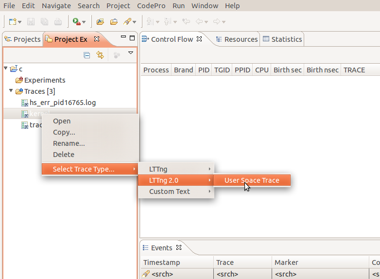
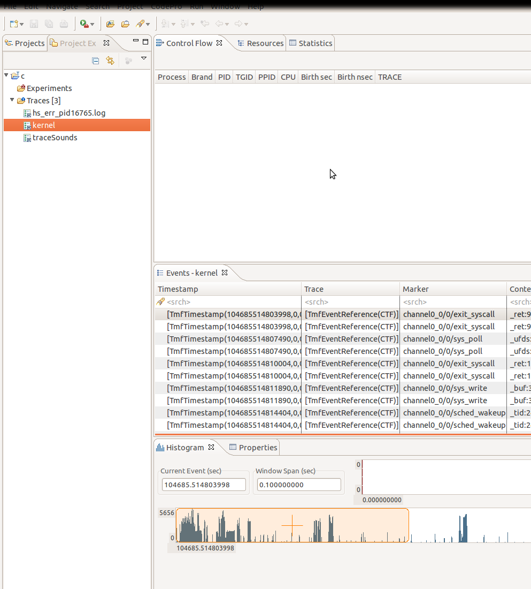

| CTF Parser | ||
|---|---|---|
|
|
|
|
| Limitations | References | |
Note: This feature is not available yet but will be delivered soon.
A Common Trace Format (CTF) parser is included in TMF, An example extension is supplied for LTTNG 2.0 User space tracing.
To load it, one needs to simply select the proper parser. (right click on a trace, Select Trace Type->Lttng 2.0->User Space Trace) as shown below

Then open the trace by right clicking on the the trace and clicking "Open".

The viewers that currently work with CTF traces are the events view and histogram.

|
|

|
|
| Limitations | References |